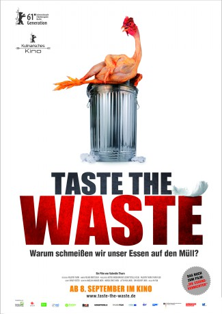

gesehen am 30.03.2016
gesehen am 30.03.2016Alternativ: Taste the Waste gesehen am 30.03.2016
 
 IMDB-Wertung: 7.7 / 10
IMDB-Wertung: 7.7 / 10  Metascore:
Metascore: 
Warum schmeißen wir unser Essen auf den Müll?
Deutsche Haushalte werfen jährlich Lebensmittel für 20 Milliarden Euro weg – so viel wie der Jahresumsatz von Aldi in Deutschland. Das Essen das wir in Europa wegwerfen, würde zwei Mal reichen, um alle Hungernden der Welt zu ernähren. Valentin Thurn hat den Umgang mit Lebensmitteln international recherchiert und kommt zu haarsträubenden Ergebnissen. Jeder zweite Kopfsalat wird aussortiert, jedes fünfte Brot muss ungekauft entsorgt werden. Kartoffeln, die der offiziellen Norm nicht entsprechen, bleiben auf dem Feld liegen und kleine Schönheitsfehler entscheiden über ein Schicksal als Ladenhüter. In den Abfall-Containern der Supermärkte findet man überwältigende Mengen einwandfreier Nahrungsmittel, original verpackt, mit gültigem Mindesthaltbarkeitsdatum. Auf der Suche nach den Ursachen und Verantwortlichen deckt er ein weltweites System auf, an dem sich alle beteiligen.
Die Folgen reichen weit, denn die Auswirkungen auf das Weltklima sind verheerend. Die Landwirtschaft verschlingt riesige Mengen an Energie, Wasser, Dünger und Pestiziden, Regenwald wird für Weideflächen gerodet. Mehr als ein Drittel der Treibhausgase entsteht durch die Landwirtschaft. Nicht unbedeutend sind auch die Berge verrottender organischer Stoffe, denn das entstehende Methangas wirkt sich auf die Erderwärmung 25 Mal so stark aus wie Kohlendioxid.
TASTE THE WASTE zeigt dass ein weltweites Umdenken stattfindet und dass es Menschen gibt, die mit Ideenreichtum und Engagement diesem Irrsinn entgegen treten.
Jahr: 2010
Dauer: 88 Minuten
FSK: 0
Land: Deutschland Studio: ARDTonspuren:
Untertitel: Deutsch,
Auflösung: 720p (1280x720) Größe: 2990 MB
Genre: Dokumentation
Regisseur: Valentin Thurn
Drehbuch: Valentin Thurn
Soundtrack:
Darsteller:
Datei: X:\Dokumentationen\Dokus(A-Z)\Taste the Waste - Frisch auf den Müll - Die globale Lebensmittelverschwendung (2010, FSK0, 1280x720).mkv seit 25.02.2016
Festplatte: HD Serien(SU-Z)+Dokus+Musik
 Es gibt insgesamt 34 Filme in der Gruppe 'Dokumentationen\Dokus(A-Z)'
Es gibt insgesamt 34 Filme in der Gruppe 'Dokumentationen\Dokus(A-Z)'